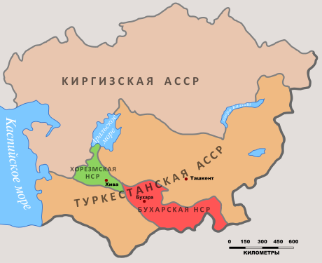

On October 25 ( November 7 ) , 1917, an armed uprising was raised in Petrograd by the Red Guards , soldiers of the Petrograd garrison and sailors of the Baltic fleet, thereby overthrowing the Provisional Government . On the same day, the II All-Russian Congress of Soviets of Workers' and Soldiers' Deputies began its work , by the decision of which all local power passes to the Soviets of Workers', Soldiers' and Peasants' Deputies [46] . In November 1917, the Sulukta miners were the first to proclaim Soviet power on the territory of Kyrgyzstan. Then it is installed in Kyzyl-Kiya, Talas, in January 1918 in Osh. In November 1917, in the Oak Park in Pishpek , a decision was made to make the city Soviet. January 1, 1918 at a meeting of the Council of Soldiers, Workers and Peasants' Deputies in Pishpek adopted a resolution to join the central government of Petrograd and Tashkent. Bolshevik G. I. Shvets-Bazarny [47] is elected Chairman of the Council . In May of the same year, Soviet power was established in Przhevalsk thanks to the support of the Red Guard detachment from Verny ., in June in Naryn. Thus, by the summer of 1918, Soviet power was established throughout Kyrgyzstan without bloodshed [48] . On January 12, 1918, at the III All-Russian Congress of Soviets , the Declaration of the Rights of the Working and Exploited People was approved - a constitutional act that legally approved the foundations of the new state system in Russia, consolidated the gains of the October Revolution and defined the tasks of Soviet power. The Declaration states that the Soviet Russian Republic is established on the basis of a free union of free nations, as a federation of Soviet national republics, leaving the workers and peasants of each nation to decide independently at their own plenipotentiary Soviet congress: whether they wish and on what grounds to participate in the federal government and in other federal Soviet institutions [49] .
At the V Turkestan Congress of Soviets on April 30, 1918, the Turkestan Soviet Republic was proclaimed as part of the RSFSR on the territory of the former Turkestan Governor-General . In 1921, the issue of creating the Mountainous Kirghiz Region as part of the Turkestan ASSR was raised, but this issue was not resolved. And in March 1922, the Kyrgyz intelligentsia, represented by Yu. Abdrakhmanov , I. Arabaev , A. Sydykov, again put forward a proposal to allocate counties with a Kyrgyz population to the Mountainous Kirghiz region. But the actual implementation of the proposal fails due to the disagreements that began between various nationalist and tribal groups after the creation of the Mountainous Kirghiz region, which led to the dissolution of the organizational congress scheduled for June 4, 1922 in Pishpek on the direct orders of Stalin , whose opinion also influenced the decision. Central Committee of the RCP(b)in December 1922, he declared illegal all previously adopted documents on the creation of the Mountainous Kirghiz region, and accused the initiators of convening the congress of bourgeois nationalism and counter-revolutionary activities [50] [51] . In January 1924, the XII All-Turkestan Congress of Soviets decided to "finish all the preparatory work for the regionalization of the Turkestan Republic on the basis of economic and natural-historical features and proceed with the reorganization of the administrative and economic management in accordance with this." In May 1924, the VIII Congress of the Communist Party of Turkestan, and then the Central Committee (CC) of the Bukhara and Khorezm Communist Parties and the Central Asian Bureau of the Central Committee of the RCP (b)recognized the national disengagement as timely and expedient. This decision of the Central Asian party organizations was approved by the Central Committee of the RCP (b) in July 1924. The preparatory work for the national delimitation was completed by September 1924. On September 16, 1924, an extraordinary session of the Central Executive Committee of the Turkestan ASSR adopted a resolution on the national-state delimitation. The second session of the All-Russian Central Executive Committee (VTsIK) of the XI convocation approved this resolution on October 14, 1924. Thus, the Kara-Kyrgyz Autonomous Region was formed (in May 1925 it was renamed the Kirghiz Autonomous Region) as part of the RSFSR [52] .